C++17 self-study adaptation of CS61B Spring 2021 Project 2: Gitlet.
The command behavior, failure messages, complexity requirements, and supplied sample tests are retained.
The original files are preserved under original-java/. This adaptation uses its own executable and storage format; it does not plug into the course's Java autograder.
Build a small version-control system in C++17. The support code is ready; implementing the repository, commits, staging, branching, checkout, and merge is your work. Begin with the C++ Capers prerequisite if persistence is new to you.
You need a C++17 compiler, Make, and Python 3 for the test runner. Python is only a testing tool; the application is C++. On this Mac, the installed compiler and Make are sufficient. No downloaded C++ libraries are required for the CLI assignment. The optional Dear ImGui extension adds GUI dependencies when you choose to implement it. On another Mac, Apple's Command Line Tools provide the compiler and Make; on Linux, use a recent GCC or Clang toolchain. The supplied Makefiles target macOS/Linux (or Linux through WSL).
# From the CS61B course folder:
cd "4 Projects/proj2"
make
make capersmake produces build/gitlet and build/dumpobj. make capers builds the prerequisite separately. make check runs the Gitlet assignment tests and is expected to fail until you implement the commands. A TODO diagnostic and exit status 2 mean an exercise is unfinished.
Run the executable from a scratch working directory. Add the project's absolute build directory to PATH for this terminal session, so the command examples below can use gitlet:
# Still in proj2:
export PATH="$(pwd)/build:$PATH"
mkdir -p playground
cd playground
gitlet init # Expected to report TODO in the starter.
# After implementing the relevant commands:
printf 'hello\n' > hello.txt
gitlet add hello.txt
gitlet commit "first snapshot"
gitlet logThe .gitlet directory belongs to the directory where you run the command. The executable's location does not decide where repository data goes. Return to the project directory to rebuild after source edits. make clean removes build products, leaving saved repositories and retained test directories intact. If you change compiler flags, clean before rebuilding.
| File | Role |
|---|---|
gitlet/Main.cpp | Entry point and exception boundary. Empty input is handled; dispatch and operand validation are exercises. |
gitlet/Repository.hpp/.cpp | Working-directory paths are provided. Design repository operations and storage. |
gitlet/Commit.hpp/.cpp | Minimal commit skeleton. Choose fields, methods, and encoding. |
gitlet/Utils.hpp/.cpp | Provided SHA-1, binary file I/O, sorted filenames, guarded deletion, and optional binary codec helpers. |
gitlet/GitletException.hpp | Specified user errors and a separate exception for unfinished exercises. |
gitlet/DumpObj.cpp, Dumpable.hpp | A byte-inspection tool and an optional interface for your decoded objects. |
testing/ | The original .in samples and fixtures, with a C++ executable adapter. |
Use headers for declarations and .cpp files for definitions. The Makefile discovers .cpp files under gitlet/ automatically, excluding the separate dump tool. Keep one main function per executable. Add assignment tests under testing/student_tests/ using the .in format below.
Use standard containers and values: std::string, std::vector, std::map, std::unordered_map, and std::set are available. References avoid unnecessary copies; ordinary containers manage their own storage. You do not need raw owning pointers or manual new/delete to implement this project.
The original Gitlet videos still explain the version-control model. Their Java syntax, IDE instructions, and course submission steps are historical; use this page for C++ setup.
Warning: Ensure you’ve completed Lab 6: Canine Capers before this project. Lab 6 is intended to be an introduction to this project and will be very helpful in getting you started and ensure you’re all set up. You should also have watched Lecture 12: Gitlet, which introduces many useful ideas for this project.
In this project you’ll be implementing a version-control system that mimics some of the basic features of the popular system Git. Ours is smaller and simpler, however, so we have named it Gitlet.
A version-control system is essentially a backup system for related collections of files. The main functionality that Gitlet supports is:
Saving the contents of entire directories of files. In Gitlet, this is called committing, and the saved contents themselves are called commits.
Restoring a version of one or more files or entire commits. In Gitlet, this is called checking out those files or that commit.
Viewing the history of your backups. In Gitlet, you view this history in something called the log.
Maintaining related sequences of commits, called branches.
Merging changes made in one branch into another.
The point of a version-control system is to help you when creating complicated (or even not-so-complicated) projects, or when collaborating with others on a project. You save versions of the project periodically. If at some later point in time you accidentally mess up your code, then you can restore your source to a previously committed version (without losing any of the changes you made since then). If your collaborators make changes embodied in a commit, you can incorporate (merge) these changes into your own version.
In Gitlet, you don’t just commit individual files at a time. Instead, you can commit a coherent set of files at the same time. We like to think of each commit as a snapshot of your entire project at one point in time. However, for simplicity, many of the examples in the remainder of this document involve changes to just one file at a time. Just keep in mind you could change multiple files in each commit.
In this project, it will be helpful for us to visualize the commits we make over time. Suppose we have a project consisting just of the file wug.txt, we add some text to it, and commit it. Then we modify the file and commit these changes. Then we modify the file again, and commit the changes again. Now we have saved three total versions of this file, each one later in time than the previous. We can visualize these commits like so:
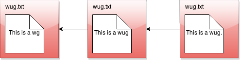
Here we’ve drawn an arrow indicating that each commit contains some kind of reference to the commit that came before it. We call the commit that came before it the parent commit–this will be important later. But for now, does this drawing look familiar? That’s right; it’s a linked list!
The big idea behind Gitlet is that we can visualize the history of the different versions of our files in a list like this. Then it’s easy for us to restore old versions of files. You can imagine making a command like: “Gitlet, please revert to the state of the files at commit #2”, and it would go to the second node in the linked list and restore the copies of files found there, while removing any files that are in the first node, but not the second.
If we tell Gitlet to revert to an old commit, the front of the linked list will no longer reflect the current state of your files, which might be a little misleading. In order to fix this problem, we introduce something called the head pointer (also called the HEAD pointer). The head pointer keeps track of where in the linked list we currently are. Normally, as we make commits, the head pointer will stay at the front of the linked list, indicating that the latest commit reflects the current state of the files:
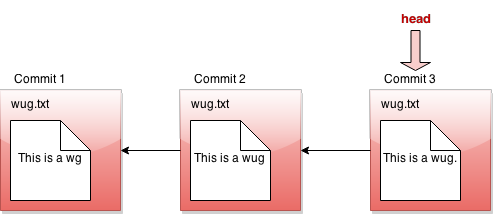
However, let’s say we revert to the state of the files at commit #2 (technically, this is the reset command, which you’ll see later in the spec). We move the head pointer back to show this:
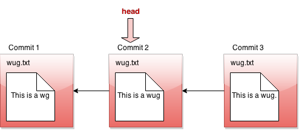
Here we say that we are in a detatched head state which you may have encountered yourself before. This is what it means!
EDITED 3/5: Note that in Gitlet, there is no way to be in a detached head state
since there is no checkout command that will move the HEAD pointer to a
specific commit. The reset command will do that, though it also moves the
branch pointer. Thus, in Gitlet, you will never be in a detached HEAD state.
All right, now, if this were all Gitlet could do, it would be a pretty simple system. But Gitlet has one more trick up its sleeve: it doesn’t just maintain older and newer versions of files, it can maintain differing versions. Imagine you’re coding a project, and you have two ideas about how to proceed: let’s call one Plan A, and the other Plan B. Gitlet allows you to save both versions, and switch between them at will. Here’s what this might look like, in our pictures:
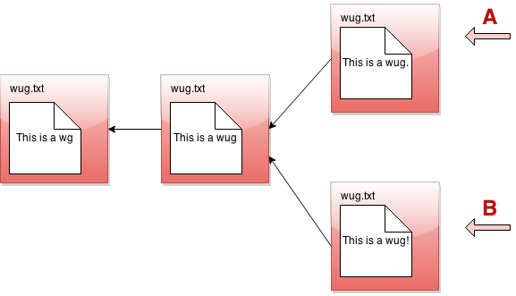
It’s not really a linked list anymore. It’s more like a tree. We’ll call this thing the commit tree. Keeping with this metaphor, each of the separate versions is called a branch of the tree. You can develop each version separately:
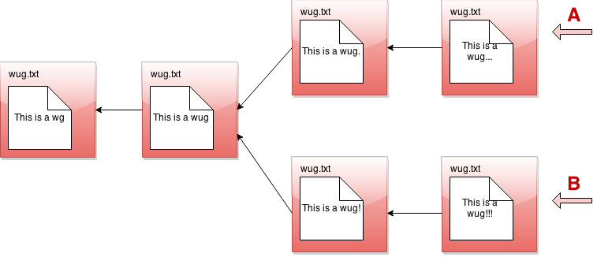
There are two pointers into the tree, representing the furthest point of each branch. At any given time, only one of these is the currently active pointer, and this is what’s called the head pointer. The head pointer is the pointer at the front of the current branch.
That’s it for our brief overview of the Gitlet system! Don’t worry if you don’t fully understand it yet; the section above was just to give you a high level picture of what its meant to do. A detailed spec of what you’re supposed to do for this project follows this section.
But a last word here: commit trees are immutable: once a commit node has been created, it can never be destroyed (or changed at all). We can only add new things to the commit tree, not modify existing things. This is an important feature of Gitlet! One of Gitlet’s goals is to allow us to save things so we don’t delete them accidentally.
Real Git distinguishes several different kinds of objects. For our purposes, the important ones are
Gitlet simplifies from Git still further by
Every object–every blob and every commit in our case–has a unique integer id that serves as a reference to the object. An interesting feature of Git is that these ids are universal: independently of in-memory object identity, two objects with exactly the same content will have the same id on all systems (i.e. my computer, your computer, and anyone else’s computer will compute this same exact id). In the case of blobs, “same content” means the same file contents. In the case of commits, it means the same metadata, the same mapping of names to references, and the same parent reference. The objects in a repository are thus said to be content addressable.
This assignment uses SHA-1 to produce a 160-bit digest, displayed as 40 lowercase hexadecimal characters. The supplied helper hashes exact file or object bytes. For this educational project, assume distinct stored contents have distinct IDs. SHA-1 has known collisions and is not appropriate for new security-sensitive designs.
The supplied gitlet::utils::sha1 function computes these IDs; implementing the hash algorithm is not part of your exercise.
All you have to do is to make sure that you
correctly label all your objects. In particular, this involves
.gitlet directory. Another way to do so is to hash in an extra
word for each object that has one value for blobs and another for commits.By the way, the SHA-1 hash value, rendered as a 40-character
hexadecimal string, makes
a convenient file name for storing your data in your .gitlet
directory (more on that below). It also gives you a convenient way to
compare two files (blobs) to see if they have the same contents: if their
SHA-1s are the same, we simply assume the files are the same.
For remotes (like skeleton which we’ve been using all semester),
we’ll simply use other Gitlet repositories. Pushing simply means copying all
commits and blobs that the remote repository does not yet have to the remote
repository, and resetting a branch reference. Pulling is the same, but in the
other direction. Remotes are an optional extension after the required local commands.
In C++, define the byte representation of each stored object explicitly. Encode its fields in a fixed order, write those bytes, then decode the same fields on a later invocation. The supplied file and codec helpers handle bytes; your classes decide what those bytes mean.
Here is a summary example of the structures discussed in this section.
As you can see, each commit (rectangle) points to some blobs (circles), which
contain file contents. The commits contain the file names and references to
these blobs, as well as a parent link. These references, depicted as arrows,
are represented in the .gitlet directory using their SHA-1 hash values (the
small hexadecimal numerals above the commits and below the blobs). The newer
commit contains an updated version of wug1.txt, but shares the same version
of wug2.txt as the older commit. Your commit class will somehow store all of
the information that this diagram shows: a careful selection of internal data
structures will make the implementation easier or harder, so it behooves you to
spend time planning and thinking about the best way to store everything.
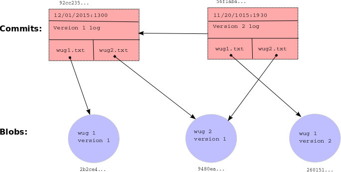
.gitlet in the current working directory. All process memory, including static variables, disappears when an invocation ends. Each new invocation must reload the state it needs.GitletException for these errors: Main prints the message to stdout and returns 0, matching the course testing convention. Unfinished TODOs return 2; unexpected internal failures return 1.Please enter a command.No command with that name exists.Incorrect operands.Not in an initialized Gitlet directory.The descriptions below preserve the original command behavior. References to testing describe observable behavior; the Java autograder is not used here. Estimates of solution line counts are historical hints, not C++ requirements.
We now go through each command you must support in detail. Remember that good programmers always care about their data structures: as you read these commands, you should think first about how you should store your data to easily support these commands and second about if there is any opportunity to reuse commands that you’ve already implemented (hint: there is ample opportunity in this project to reuse code in later parts of project 2 that you’ve already written in earlier parts of project 2). We have listed lectures in some methods that we have found useful, but you are not required to use concepts from these lectures. There are conceptual quizzes on some of the more confusing commands that you should definately use to check your understanding. The quizzes are not for a grade, they are only there to help you check your understanding before trying to implement the command.
Usage: gitlet init
Description: Creates a new Gitlet version-control system in the
current directory. This system will automatically start with one
commit: a commit that contains no files and has the commit message
initial commit (just like that, with no punctuation).
It will have a single branch: master, which
initially points to this initial commit, and master will be the
current branch. The timestamp for this initial commit will be
00:00:00 UTC, Thursday, 1 January 1970 in whatever format you
choose for dates (this is
called “The (Unix) Epoch”, represented internally by the time 0.)
Since the initial commit in all repositories
created by Gitlet will have exactly the same content,
it follows that all repositories will automatically share
this commit (they will all have the same UID)
and all commits in all repositories will trace back to it.
Runtime: Should be constant relative to any significant measure.
Failure cases: If there is already a Gitlet version-control
system in the current directory, it should abort. It should NOT
overwrite the existing system with a new one. Should print the error
message A Gitlet version-control system already exists in the
current directory.
Dangerous?: No
Our line count: ~15
Usage: gitlet add [file name]
Description: Adds a copy of the file as it currently exists to
the staging area (see the description of the commit
command). For this reason, adding a file is also
called staging the file for addition.
Staging an already-staged file overwrites the previous entry
in the staging area with the new contents.
The staging area should be somewhere in
.gitlet. If the current working version of the file is identical to
the version in the current commit, do not stage it to be added, and remove it
from the staging area if it is already there (as can happen when a file is
changed, added, and then changed back to it’s original version). The file
will no longer be staged for removal (see gitlet rm), if it
was at the time of the command.
Runtime: In the worst case, should run in linear time relative to the size of the file being added and $\lg N$, for $N$ the number of files in the commit.
Failure cases: If the file does not exist, print the error
message File does not exist. and exit without changing
anything.
Dangerous?: No
Our line count: ~20
Differences from real git: In real git, multiple files may be added at once. In gitlet, only one file may be added at a time.
Suggested Lecture(s): Lecture 16 (Sets, Maps, ADTs), Lecture 19 (Hashing)
Usage: gitlet commit [message]
Description: Saves a snapshot of tracked files in the current commit
and staging area so they can be
restored at a later time, creating a new commit.
The commit is said to be tracking the saved files. By default,
each commit’s snapshot of files will be exactly the same as its
parent commit’s snapshot of files; it will keep versions of files
exactly as they are, and not update them. A commit will only update
the contents of files it is tracking that have been staged
for addition at
the time of commit, in which case the commit will now include the
version of the file that was staged instead of the version it got
from its parent. A commit will save and start tracking any files
that were staged for addition but weren’t tracked by its parent. Finally, files tracked
in the current commit may be untracked in the new commit as a result
being staged for removal by the
rm command (below).
The bottom line: By default a commit has the same file contents as its parent. Files staged for addition and removal are the updates to the commit. Of course, the date (and likely the mesage) will also different from the parent.
Some additional points about commit:
The staging area is cleared after a commit.
The commit command never adds, changes, or removes files in the
working directory (other than those in the .gitlet directory). The
rm command will remove such files, as well as staging them for
removal, so that they will be untracked after a commit.
Any changes made to files after staging for addition or removal
are ignored by the
commit command, which only modifies the contents of the .gitlet
directory. For example, if you remove a tracked file using the Unix
rm command (rather than Gitlet’s command of the same name), it has no
effect on the next commit, which will still contain the (now deleted)
version of the file.
After the commit command, the new commit is added as a new node in the commit tree.
The commit just made becomes the “current commit”, and the head pointer now points to it. The previous head commit is this commit’s parent commit.
Each commit should contain the date and time it was made.
Each commit has a log message associated with it that describes the
changes to the files in the commit. This is specified by the
user. The entire message should take up only one entry in
the array args that is passed to main. To include multiword
messages, you’ll have to surround them in quotes.
Each commit is identified by its SHA-1 id, which must include the file (blob) references of its files, parent reference, log message, and commit time.
Runtime: Runtime should be constant with respect to any measure
of number of commits. Runtime must be no worse than linear with
respect to the total size of files the commit is tracking.
Additionally, this command has a memory requirement: Committing must
increase the size of the .gitlet directory by no more than the total
size of the files staged for addition at the time of commit, not including
additional metadata. This means don’t store redundant copies of
versions of files that a commit receives from its parent (hint: remember that
blobs are content addressable and use the SHA1 to your advantage).
You are allowed to save whole additional copies of files;
don’t worry about only saving diffs, or anything like that.
Failure cases: If no files have been staged, abort. Print the message No
changes added to the commit. Every commit must have a non-blank
message. If it doesn’t, print the error message Please enter
a commit message. It is not a failure for tracked files to be
missing from the working directory or changed in the working directory.
Just ignore everything outside the .gitlet directory entirely.
Dangerous?: No
Differences from real git: In real git, commits may have multiple parents (due to merging) and also have considerably more metadata.
Our line count: ~35
Suggested Lecture(s): Lecture 19 (Sets, Maps, ADTs), Lecture 19 (Hashing)
Here’s a picture of before-and-after commit:
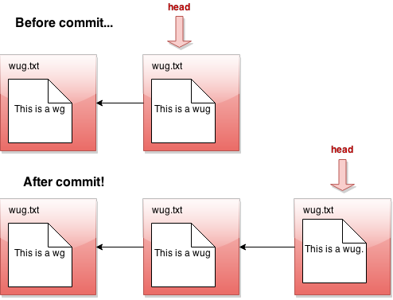
Usage: gitlet rm [file name]
Description: Unstage the file if it is currently staged for addition. If the file is tracked in the current commit, stage it for removal and remove the file from the working directory if the user has not already done so (do not remove it unless it is tracked in the current commit).
Runtime: Should run in constant time relative to any significant measure.
Failure cases: If the file is neither staged nor tracked by the
head commit, print the error message No reason to remove the file.
Dangerous?: Yes (although if you use our utility methods, you will only hurt your repository files, and not all the other files in your directory.)
Our line count: ~20
Usage: gitlet log
Description: Starting at the current head commit, display
information about each commit backwards along the commit tree until
the initial commit, following the first parent commit links, ignoring any
second parents found in merge commits. (In regular Git, this is what
you get with git log --first-parent).
This set of commit nodes is called the commit’s
history. For every node in this history, the information it should
display is the commit id, the time the commit was made, and the
commit message. Here is an example of the exact format it should
follow:
===
commit a0da1ea5a15ab613bf9961fd86f010cf74c7ee48
Date: Thu Nov 9 20:00:05 2017 -0800
A commit message.
===
commit 3e8bf1d794ca2e9ef8a4007275acf3751c7170ff
Date: Thu Nov 9 17:01:33 2017 -0800
Another commit message.
===
commit e881c9575d180a215d1a636545b8fd9abfb1d2bb
Date: Wed Dec 31 16:00:00 1969 -0800
initial commit
There is a === before each commit and an empty line after it.
As in real Git, each entry displays the unique SHA-1 id of the commit
object. The timestamps displayed in the commits reflect
the current timezone, not UTC; as a result, the timestamp for the initial
commit does not read Thursday, January 1st, 1970, 00:00:00, but rather the
equivalent Pacific Standard Time. Your timezone might be different depending
on where you live, and that’s fine.
Display commits with the most recent at the top. For C++17, use std::chrono::system_clock for timestamps and std::localtime/std::strftime or std::put_time for display. Format the weekday/month with %a %b, insert tm_mday as an unpadded integer, and format the remainder with %H:%M:%S %Y %z. Avoid the extra leading space that %e adds to single-digit days, which does not match the supplied test patterns. Keep weekday/month names in English and include the numeric timezone offset. The initial commit's timestamp is the Unix epoch, displayed in the local timezone.
Of course, the SHA1 identifiers are going to be different, so don’t worry about those. Our tests will ensure that you have something that “looks like” a SHA1 identifier (more on that in the testing section below).
For merge commits (those that have two parent commits), add a line just below the first, as in
===
commit 3e8bf1d794ca2e9ef8a4007275acf3751c7170ff
Merge: 4975af1 2c1ead1
Date: Sat Nov 11 12:30:00 2017 -0800
Merged development into master.
where the two hexadecimal numerals following “Merge:” consist of the first seven digits of the first and second parents’ commit ids, in that order. The first parent is the branch you were on when you did the merge; the second is that of the merged-in branch. This is as in regular Git.
Runtime: Should be linear with respect to the number of nodes in head’s history.
Failure cases: None
Dangerous?: No
Our line count: ~20
Here’s a picture of the history of a particular commit. If the current branch’s head pointer happened to be pointing to that commit, log would print out information about the circled commits:
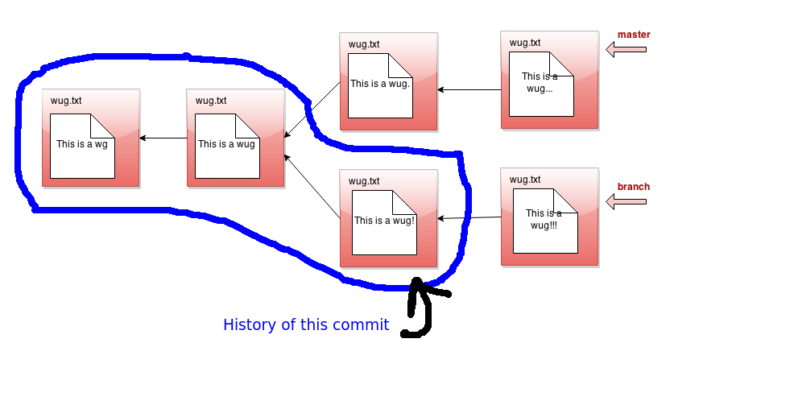
The history ignores other branches and the future. Now that we have the concept of history, let’s refine what we said earlier about the commit tree being immutable. It is immutable precisely in the sense that the history of a commit with a particular id may never change, ever. If you think of the commit tree as nothing more than a collection of histories, then what we’re really saying is that each history is immutable.
Usage: gitlet global-log
Description: Like log, except displays information about all
commits ever made. The order of the commits does not matter. Hint: there is a
useful method in gitlet.Utils that will help you iterate over files within
a directory.
Runtime: Linear with respect to the number of commits ever made.
Failure cases: None
Dangerous?: No
Our line count: ~10
Usage: gitlet find [commit message]
Description: Prints out the ids of all commits that have the given
commit message, one per line.
If there are multiple such commits, it prints the
ids out on separate lines. The commit message is a single operand; to
indicate a multiword message, put the operand in quotation marks, as for
the commit command below. Hint: the hint for this command is the same as the
one for global-log.
Runtime: Should be linear relative to the number of commits.
Failure cases: If no such commit exists, prints the error
message Found no commit with that message.
Dangerous?: No
Differences from real git: Doesn’t exist in real git. Similar effects can be achieved by grepping the output of log.
Our line count: ~15
Usage: gitlet status
Description: Displays what branches currently exist, and marks
the current branch with a *. Also displays what files have been
staged for addition or removal. An example of the exact format it
should follow is as follows.
=== Branches ===
*master
other-branch
=== Staged Files ===
wug.txt
wug2.txt
=== Removed Files ===
goodbye.txt
=== Modifications Not Staged For Commit ===
junk.txt (deleted)
wug3.txt (modified)
=== Untracked Files ===
random.stuff
The last two sections (modifications not staged and untracked files) are optional extensions, as in the original assignment. You may initially leave their contents blank, but always print the section headers.
There is an empty line between sections, and the entire status ends in an
empty line as well. List entries in the original Java string-comparison order: lexicographic order of UTF-16 code units. std::string comparison gives the same order for ASCII names; for Unicode names, compare std::filesystem::path(name).u16string() values. The supplied plainFilenamesIn helper already uses this order. The current-branch asterisk does not affect sorting. A file in the
working directory is “modified but not staged” if it is
The final category (“Untracked Files”) is for files present in the working directory but neither staged for addition nor tracked. This includes files that have been staged for removal, but then re-created without Gitlet’s knowledge. Ignore any subdirectories that may have been introduced, since Gitlet does not deal with them.
Runtime: Make sure this depends only on the amount of data in the working directory plus the number of files staged to be added or deleted plus the number of branches.
Failure cases: None
Dangerous?: No
Our line count: ~45
Checkout is a kind of general command that can do a few different things depending on what its arguments are. There are 3 possible use cases. In each section below, you’ll see 3 numbered points. Each corresponds to the respective usage of checkout.
Usages:
gitlet checkout -- [file name]
gitlet checkout [commit id] -- [file name]
gitlet checkout [branch name]
Descriptions:
Takes the version of the file as it exists in the head commit and puts it in the working directory, overwriting the version of the file that’s already there if there is one. The new version of the file is not staged.
Takes the version of the file as it exists in the commit with the given id, and puts it in the working directory, overwriting the version of the file that’s already there if there is one. The new version of the file is not staged.
Takes all files in the commit at the head of the given branch, and puts them in the working directory, overwriting the versions of the files that are already there if they exist. Also, at the end of this command, the given branch will now be considered the current branch (HEAD). Any files that are tracked in the current branch but are not present in the checked-out branch are deleted. The staging area is cleared, unless the checked-out branch is the current branch (see Failure cases below).
Runtimes:
Should be linear relative to the size of the file being checked out.
Should be linear with respect to the total size of the files in the commit’s snapshot. Should be constant with respect to any measure involving number of commits. Should be constant with respect to the number of branches.
Failure cases:
If the file does not exist in the previous commit, abort,
printing the error message File does not exist in that
commit. Do not change the CWD.
If no commit with the given id exists, print No commit with
that id exists. Otherwise, if the file does not exist in the given
commit, print the same message as for failure case 1. Do not change the
CWD.
If no branch with that name exists, print No such branch exists.
If that branch is the current branch, print No need to checkout the
current branch. If a working file is untracked in the current
branch and would be overwritten by the checkout, print
There is an untracked file in the way; delete it, or add and commit it
first. and exit; perform this check before doing anything else. Do not
change the CWD.
Differences from real git: Real git does not clear the staging area and stages the file that is checked out. Also, it won’t do a checkout that would overwrite or undo changes (additions or removals) that you have staged.
A [commit id] is, as described earlier, a hexadecimal numeral. A convenient
feature of real Git is that one can abbreviate commits with a unique
prefix. For example, one can abbreviate
a0da1ea5a15ab613bf9961fd86f010cf74c7ee48
as
a0da1e
in the (likely) event that no other object exists with a SHA-1 identifier that
starts with the same six digits. You should arrange for the same thing to
happen for commit ids that contain fewer than 40 characters. Unfortunately,
using shortened ids might slow down the finding of objects if implemented
naively (making the time to find a file linear in the number of objects), so
we won’t worry about timing for commands that use shortened ids. We suggest,
however, that you poke around in a .git directory (specifically,
.git/objects) and see how it manages to speed up its search. You will perhaps
recognize a familiar data structure implemented with the file system rather
than pointers.
Only version 3 (checkout of a full branch) modifies the staging area: otherwise files scheduled for addition or removal remain so.
Dangerous?: Yes!
Our line counts:
Usage: gitlet branch [branch name]
Description: Creates a new branch with the given name, and points it at the current head commit. A branch is nothing more than a name for a reference (a SHA-1 identifier) to a commit node. This command does NOT immediately switch to the newly created branch (just as in real Git). Before you ever call branch, your code should be running with a default branch called “master”.
Runtime: Should be constant relative to any significant measure.
Failure cases: If a branch with the given name already exists,
print the error message A branch with that name already exists.
Dangerous?: No
Our line count: ~10
All right, let’s see what branch does in detail. Suppose our state looks like this:
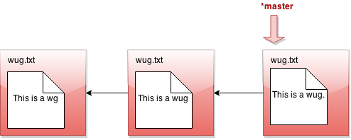
Now we call gitlet branch cool-beans. Then we get this:
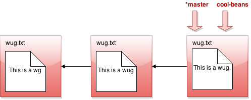
Hmm… nothing much happened. Let’s switch to the branch with gitlet
checkout cool-beans:
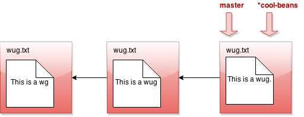
Nothing much happened again?! Okay, say we make a commit now. Modify
some files, then gitlet add... then gitlet commit...
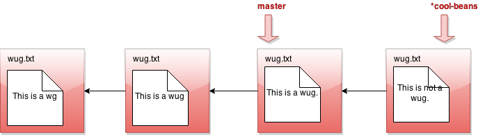
I was told there would be branching. But all I see is a straight line.
What’s going on? Maybe I should go back to my other branch with gitlet checkout master:
Now I make a commit…
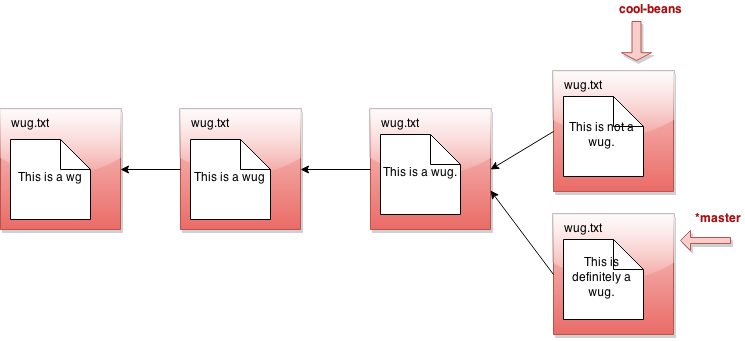
Phew! So that’s the whole idea of branching. Did you catch what’s
going on? All that creating a branch does is to give us a new pointer. At any
given time, one of these pointers is considered the currently active
pointer, also called the HEAD pointer (indicated by *). We can switch the
currently active head pointer with checkout [branch name]. Whenever
we commit, it means we add a child commit to the currently active HEAD commit
even if there is already a child commit. This naturally creates branching
behavior as a commit can now have multiple children.
A video example and overview of branching can be found here
Make sure that the behavior of your branch, checkout, and
commit match what we’ve described above. This is pretty core
functionality of Gitlet that many other commands will depend upon. If
any of this core functionality is broken, tests of many later commands will fail!
Usage: gitlet rm-branch [branch name]
Description: Deletes the branch with the given name. This only means to delete the pointer associated with the branch; it does not mean to delete all commits that were created under the branch, or anything like that.
Runtime: Should be constant relative to any significant measure.
Failure cases: If a branch with the given name does not exist,
aborts. Print the error message A branch with that name does not
exist. If you try to remove the branch you’re currently on, aborts,
printing the error message Cannot remove the current branch.
Dangerous?: No
Our line count: ~15
Usage: gitlet reset [commit id]
Description: Checks out all the files tracked by the given
commit. Removes tracked files that are not present in that commit.
Also moves the current branch’s head to that commit node.
See the intro for an example of what happens to the head pointer
after using reset. The [commit id] may be abbreviated as for
checkout. The staging area is cleared. The command is essentially
checkout of an arbitrary commit that also changes the current branch
head.
Runtime: Should be linear with respect to the total size of files tracked by the given commit’s snapshot. Should be constant with respect to any measure involving number of commits.
No
commit with that id exists. If a working file is untracked in the current
branch and would be overwritten by the reset, print
and exit; perform this check before doing anything else.
Dangerous?: Yes!
Differences from real git: This command is
closest to using the --hard option, as in git reset --hard [commit
hash].
Usage: gitlet merge [branch name]
Description: Merges files from the given branch into the current branch. This method is a bit complicated, so here’s a more detailed description:
master is the current branch and branch is the given
branch:
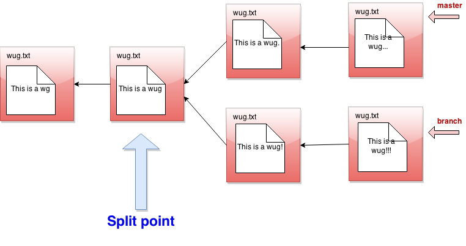
The split point is a latest common ancestor of the current and given branch heads: - A common ancestor is a commit to which there is a path (of 0 or more parent pointers) from both branch heads. - A latest common ancestor is a common ancestor that is not an ancestor of any other common ancestor. For example, although the leftmost commit in the diagram above is a common ancestor ofmaster and branch, it is also an ancestor of the
commit immediately to its right, so it is not a latest common
ancestor.
If the split point is the same commit as the given branch, then
we do nothing; the merge is complete, and the operation ends with the
message Given branch is an ancestor of the current branch.
If the split point is the current branch, then the effect is to
check out the given branch, and the operation
ends after printing the message Current branch fast-forwarded.
Otherwise, we continue
with the steps below.Any files that have been modified in the given branch since the split point, but not modified in the current branch since the split point should be changed to their versions in the given branch (checked out from the commit at the front of the given branch). These files should then all be automatically staged. To clarify, if a file is “modified in the given branch since the split point” this means the version of the file as it exists in the commit at the front of the given branch has different content from the version of the file at the split point. Remember: blobs are content addressable!
Any files that have been modified in the current branch but not in the given branch since the split point should stay as they are.
Any files that have been modified in both the current and given branch in the same way (i.e., both files now have the same content or were both removed) are left unchanged by the merge. If a file was removed from both the current and given branch, but a file of the same name is present in the working directory, it is left alone and continues to be absent (not tracked nor staged) in the merge.
Any files that were not present at the split point and are present only in the current branch should remain as they are.
Any files that were not present at the split point and are present only in the given branch should be checked out and staged.
Any files present at the split point, unmodified in the current branch, and absent in the given branch should be removed (and untracked).
Any files present at the split point, unmodified in the given branch, and absent in the current branch should remain absent.
Any files modified in different ways in the current and given branches are in conflict. “Modified in different ways” can mean that the contents of both are changed and different from other, or the contents of one are changed and the other file is deleted, or the file was absent at the split point and has different contents in the given and current branches. In this case, replace the contents of the conflicted file with
<<<<<<< HEAD
contents of file in current branch
=======
contents of file in given branch
>>>>>>>
(replacing “contents of…” with the indicated file’s contents) and stage the result. Treat a deleted file in a branch as an empty file. Use straight concatenation here. In the case of a file with no newline at the end, you might well end up with something like this:
<<<<<<< HEAD
contents of file in current branch=======
contents of file in given branch>>>>>>>
This is fine; people who produce non-standard, pathological files because they don’t know the difference between a line terminator and a line separator deserve what they get.
Once files have been updated according to the above, and the split point was not
the current branch or the given branch, merge automatically commits with the log
message Merged [given branch name] into [current branch name]. Then, if the
merge encountered a conflict, print the message Encountered a merge conflict.
on the terminal (not the log). Merge commits differ from other commits: they
record as parents both the head of the current branch (called the first
parent) and the head of the branch given on the command line to be merged in.
A video walkthrough of this command can be found here.
By the way, we hope you’ve noticed that the set of commits has progressed from a simple sequence to a tree and now, finally, to a full directed acyclic graph.
Runtime: $O(N\lg N + D)$, where $N$ is the total number of ancestor commits for the two branches and $D$ is the total amount of data in all the files under these commits.
Failure cases: If there are staged additions or removals present,
print the error message You have uncommitted changes. and exit.
If a branch with the given name does not exist,
print the error message A branch with that name does not exist. If
attempting to merge a branch with itself, print the error message
Cannot merge a branch with itself. If merge would generate an
error because the commit that it does has no changes in it, just let
the normal commit error message for this go through.
If an untracked file in the current commit would be overwritten or deleted by the merge, print
There is an untracked file in the way; delete it, or add and commit it first. and
exit; perform this check before doing anything else.
Dangerous?: Yes!
Differences from real git: Real Git does a more subtle job of merging files, displaying conflicts only in places where both files have changed since the split point.
Real Git has a different way to decide which of multiple possible split points to use.
Real Git will force the user to resolve the merge conflicts before committing to complete the merge. Gitlet just commits the merge, conflicts and all, so that you must use a separate commit to resolve problems.
Real Git will complain if there are unstaged changes to a file that would be changed by a merge. You may do so as well if you want, but we will not test that case.
Our line count: ~70
Suggested Lecture(s): Lecture 19 (Sets, Maps, ADTs), Lecture 22 (Graph Traversal)
Fill in gitlet-design.md before implementing commands. Describe responsibilities, data structures, ownership, on-disk representation, and the operations used by each command. Update it as your design changes.
The provided samples cover only a small part of Gitlet. Passing all four is a milestone, not proof that the full project is correct. Expand tests for every failure case and interactions across commands. Historical deadlines, grading weights, snaps repositories, and submission services do not apply to this self-study port.
#include <filesystem>
#include "Utils.hpp"
namespace fs = std::filesystem;
fs::path cwd = fs::current_path();
fs::path metadata = cwd / ".gitlet";
bool initialized = fs::is_directory(metadata);
// Creating directories belongs in your initialization logic:
// fs::create_directories(metadata);A path is a value describing a location; constructing one does not create a file. Use / to join paths and filesystem functions to create/check directories. File helpers do not create missing parent directories for you. Read and write files as exact bytes: std::string may contain NULs, so use its length rather than strlen.
| Helper in gitlet::utils | Contract |
|---|---|
sha1(bytes), sha1({part1, part2}) | 40 lowercase hexadecimal characters; hashes the concatenated bytes. |
readContents(path), readContentsAsString(path) | Read the whole regular file as a binary string. Missing/non-file paths throw. |
writeContents(path, bytes), writeContents(path, {parts...}) | Create or replace a file with exactly these bytes. Parent directory must exist. |
plainFilenamesIn(dir) | Regular filenames in Java's UTF-16 lexicographic order; directories excluded. Invalid directories or filenames that cannot be converted to UTF-16 throw. |
restrictedDelete(path) | Refuses deletion unless the parent contains .gitlet. Never deletes a directory. Still implement the command's untracked-file protections yourself. |
C++ does not automatically serialize class fields. Never write sizeof(object) bytes from an object's address: strings and containers contain implementation details and memory addresses. Instead, encode the logical values and reconstruct them when loading.
Choose and document a format. Text is fine if escaping and field boundaries are unambiguous. Alternatively, the provided BinaryWriter and BinaryReader offer two primitives:
writeUint64(value) / readUint64(): an unsigned integer in eight bytes, most significant byte first.writeString(value) / readString(): an eight-byte byte-count followed by that many bytes, including embedded NULs.writer.bytes() returns the accumulated bytes; reader.requireEnd() rejects trailing data. Short or invalid lengths throw.// Generic codec example, not a commit format:
gitlet::utils::BinaryWriter writer;
writer.writeString("a note with spaces");
writer.writeUint64(3);
gitlet::utils::BinaryReader reader(writer.bytes());
std::string text = reader.readString();
auto count = reader.readUint64();
reader.requireEnd();Optional templates serialize(object), writeObject(path, object), and readObject<T>(path) work only after you provide std::string T::serialize() const and static T T::deserialize(const std::string&) (or a compatible signature). They do not choose fields or inspect a class. The commit class intentionally leaves these decisions to you.
Object IDs must be deterministic. Encode the same logical object identically every time; hash the exact bytes you persist. Use a fixed field order and deterministic ordering for maps (for example, std::map or sorted keys). Hash all required metadata and references. Distinguish object kinds in your layout or encoding. Store parent/blob references as IDs so loading one commit does not load the full history or every file's contents.
Use build/dumpobj PATH to inspect a file's bytes and readable characters. For a structured view, implement your own decoder and optionally the Dumpable::dump(std::ostream&) interface. The byte viewer cannot infer your schema.
# In proj2:
make
make check
make check TESTER_FLAGS="--show=all --verbose"
# Run a single assignment test:
cd testing
python3 tester.py --show=all samples/test01-init.in
python3 runner.py --show=all samples/test02-basic-checkout.in
python3 tester.py --keep --verbose samples/test03-basic-log.inCompile before invoking the runner directly. runner.py and tester.py are equivalent entry points. They locate build/gitlet relative to the script, so no classpath, REPO_DIR, Java libraries, or external staff solution is needed. To test a different executable, pass --program /absolute/path/to/gitlet.
Useful options: --show=N or --show=all prints failing test source; --keep retains generated directories; --verbose displays directives/output; --timeout=SECONDS sets the per-invocation limit; --src=DIR selects fixture files. Output tolerance defaults to zero. --tolerance=N is available for exploratory use, but keep it zero for acceptance checks.
Each command in a test launches a fresh process. Specified user errors should print their expected message and return 0. A crash, nonzero exit, timeout, missing fixture, or mismatched output fails the test. No tests matched is an error, not success. The adapter compares file bytes exactly, including line endings. Paths to the executable and test directories may contain spaces.
The original samples and both definitions.inc files are unchanged. The test language supports:
# A comment
I definitions.inc # Include syntax uses a whole line: I FILE
C other # Switch to/create a test subdirectory; C alone returns
T 10 # Set command timeout in seconds
+ working.txt fixture.txt # Copy src/fixture.txt to working.txt
- working.txt # Remove a working file
E .gitlet # Require a file/directory to exist
* absent.txt # Require a path not to exist
= working.txt fixture.txt # Compare working file with fixture bytes
D NAME "some value" # Define a substitution variableThe comments above explain the syntax; actual directives must be written on their own lines without trailing comments. The simple file directives use whitespace-separated names. Command lines support quoted operands containing spaces.
> commit "message with spaces"
<<<
> status
EXPECTED OUTPUT HERE
<<<An empty expected-output block means silence is required. End the block with <<<* to interpret it as a Python regular expression. ${NAME} expands a variable; ${1}, ${2}, etc. refer to capture groups from the previous command's expected-output regex. Capture 0 is the full output. Copy a capture into a named variable before another command replaces it.
I definitions.inc
> init
<<<
E .gitlet
> log
===
${COMMIT_HEAD}
initial commit
<<<*
D INITIAL_ID "${1}"
# INITIAL_ID now holds the generated commit hash.Commands are split using shell-style quoting and passed directly to the executable. Shell expansion, pipes, redirections, and command substitutions are not evaluated by the runner. Use +, -, and fixture files to prepare filesystem state.
The default build includes debug symbols and disables optimization. Run a failing test with --keep --verbose, then inspect the printed directory and the command that failed. Replaying a command can mutate state; rerun the fixture if you need a fresh reproduction.
# Save the executable path while in proj2:
gitlet_executable="$(pwd)/build/gitlet"
# Change into the exact test directory printed by --keep:
cd "testing/TEST-DIRECTORY-PRINTED-BY-RUNNER"
lldb -- "$gitlet_executable" COMMAND OPERAND
# Inside LLDB:
# breakpoint set --name main
# run
# next
# step
# frame variableOn Linux, the analogous launch is gdb --args /absolute/path/to/gitlet COMMAND OPERAND. There is no JVM remote-debugging mode. Optionally rebuild with memory/undefined-behavior checks:
make clean
make CXXFLAGS="-std=c++17 -Wall -Wextra -Wpedantic -g -O1 -fsanitize=address,undefined -fno-omit-frame-pointer"
# Clean again before returning to ordinary build flags.Build a small C++ desktop application with Dear ImGui to explore the repository you implemented. See how commits connect, which commit each branch points to, what is staged, and which files belong to a saved snapshot. This is an optional self-study extension to the C++ port, beyond the original Java assignment. The GUI described here is a project to implement; it is not included in the starter.
Start once init, add, commit, log, and status work. Add branch and merge visualization as those commands become available. Keep the CLI executable and its specified behavior working throughout.
Begin with one window that opens a Gitlet working directory and displays its current state. A path text field and an Open button are sufficient; a native file picker is optional. Opening a directory without .gitlet should show an explanatory message without creating a repository.
| Area | What to show |
|---|---|
| Branches | Branch names and their commit IDs, with the current branch and HEAD clearly marked. |
| Commit graph | A node per commit reachable from the branch tips, with connections to its parents. Include both parents of a merge commit. Use short IDs and messages as labels; clicking a node selects it. |
| Commit details | The selected commit's full ID, message, timestamp, parent IDs, and tracked filenames. Selecting a file displays its saved contents from that commit. Display binary data as bytes or a binary-file notice. |
| Staging | Files staged for addition and removal, using the same repository state as CLI status. |
Browsing and selecting items must leave repository and working files unchanged. Add a Refresh button so changes made through the CLI become visible. Keep selection by commit ID when refreshing, and handle selections that no longer exist.
A commit graph is a directed acyclic graph: merges can have two parents, and several branches can share an ancestor. Traverse both parent links, visit each commit once, and use a stable layout such as rows and branch lanes. The graph layout and selection behavior are your work. Dear ImGui supplies drawing and interaction tools, not a Gitlet graph viewer.
Use the official Getting Started guide and example applications. A suitable starting point for this C++ project is example_glfw_opengl3: GLFW provides the window and input, and OpenGL renders the interface. Follow its platform build instructions to run the demo before connecting Gitlet.
Keep the example's window setup, event loop, and Dear ImGui backends. Use ImGui::ShowDemoWindow() and imgui_demo.cpp to learn lists, tables, text inputs, and selectable items. For the graph, start with circles, lines, labels, and click handling on a drawing area. Basic panels are enough for the first version.
When implementing the extension, add a separate GUI executable and an explicit build target, for example make gui producing build/gitlet-gui. These names are proposed targets to create, not commands supplied by the current Makefile. Keep GUI sources outside gitlet/*.cpp, which the existing CLI build includes automatically. Give each executable its own entry point, and link the GUI to the shared repository sources without linking either CLI Main.cpp or DumpObj.cpp. Ordinary make and make check should continue to work without GUI dependencies.
Expose repository operations and queries as ordinary C++ methods. The CLI formats results as the assignment requires; the GUI displays the same data in widgets. Use your existing decoding and file-access code to read .gitlet. Dear ImGui does not interpret the storage format.
The current Repository constructor uses the process's working directory. For the GUI, allow the shared repository layer to accept an explicit working-directory path while retaining the CLI's current-directory default. Resolve working files and .gitlet relative to that selected directory, independently of where the GUI executable was launched.
Keep interface state, such as a selected commit, graph scroll position, and message input, separate from saved repository state. Load a snapshot when opening or refreshing the view, and refresh after a successful action. Rebuilding the interface each frame must not repeat file writes or reload the whole history. Display filenames and commit messages as literal text, not as printf-style format strings; use commit IDs as stable widget identifiers.
After the viewer works, add Stage, Commit, Checkout Branch, Create Branch, and Merge controls as their corresponding CLI operations are completed. A button press should call the same repository method once. Catch specified errors at the GUI boundary, display their messages, and keep the application open. Preserve the CLI's validation, untracked-file protections, persistence, and merge-conflict behavior. Refresh the panels after operations change state.
File diffs, a conflict editor, and rearrangeable panels are possible later additions. The first complete extension is the small repository viewer above.
Use a scratch repository to create a few commits, a branch, and eventually a merge. Confirm that the viewer shows the correct parent connections, branch tips, staged files, and saved file contents. Make a change through the CLI and verify that Refresh picks it up. Close and reopen the GUI to verify that it loads persisted state. If you add command buttons, check their results through the CLI as well, including a rejected checkout that would overwrite an untracked file. Continue using the existing assignment tests for the shared Gitlet logic.
Implement these only after the required commands. As in the original assignment, a remote is another .gitlet directory accessible on the filesystem. Networking, authentication, and interoperability with real Git are outside scope. These are optional self-study extensions.
A few notes about the remote commands:
Execution time will not be graded. For your own edification, please don’t do anything ridiculous, though.
All the commands are significantly simplified from their git equivalents, so specific differences from git are usually not notated. Be aware they are there, however.
So now let’s go over the commands:
Usage: gitlet add-remote [remote name] [name of remote directory]/.gitlet
Description: Saves the given login information under the given
remote name. Attempts to push or pull from the given remote name
will then attempt to use this .gitlet directory.
By writing, e.g.,
gitlet add-remote other ../testing/otherdir/.gitlet
you can provide tests of remotes that will work from all
locations on your machine or in a test directory.
Always use forward slashes in these commands. Have your program convert
all the forward slashes into the path separator character (forward slash on
Unix and backslash on Windows). Construct a std::filesystem::path from the supplied path; use its native path operations rather than hard-coded separators.
Failure cases: If a remote with the given name already exists,
print the error message: A remote with that name already exists.
You don’t have to check if the user name and server
information are legit.
Dangerous?: No.
Usage: gitlet rm-remote [remote name]
Description: Remove information associated with the given remote name. The idea here is that if you ever wanted to change a remote that you added, you would have to first remove it and then re-add it.
Failure cases: If a remote with the
given name does not exist, print the error message: A remote with
that name does not exist.
Dangerous?: No.
Usage: gitlet push [remote name] [remote branch name]
Description: Attempts to append the current branch’s commits to the end of the given branch at the given remote. Details:
This command only works if the remote branch’s head is in the history of the current local head, which means that the local branch contains some commits in the future of the remote branch. In this case, append the future commits to the remote branch. Then, the remote should reset to the front of the appended commits (so its head will be the same as the local head). This is called fast-forwarding.
If the Gitlet system on the remote machine exists but does not have the input branch, then simply add the branch to the remote Gitlet.
Failure cases: If the remote branch’s head is not in the history
of the current local head, print the error message Please pull down
remote changes before pushing. If the remote .gitlet directory does not
exist, print Remote directory not found.
Dangerous?: No.
Usage: gitlet fetch [remote name] [remote branch name]
Description: Brings down commits from the remote Gitlet repository into the
local Gitlet repository. Basically, this copies all commits and blobs from the given
branch in the remote repository (that are not already in the current
repository) into a branch named [remote name]/[remote branch name] in the
local .gitlet (just
as in real Git), changing [remote name]/[remote branch name] to point
to the head commit (thus copying the contents of the branch from the remote
repository to the current one). This branch is created in the local
repository if it did not previously exist.
Failure cases: If the remote Gitlet repository does not have the given
branch name, print the error message That remote does not have that
branch. If the remote .gitlet directory does not
exist, print Remote directory not found.
Dangerous? No
Usage: gitlet pull [remote name] [remote branch name]
Description: Fetches branch [remote name]/[remote branch name] as
for the fetch command, and then merges that fetch into the current branch.
Failure cases: Just the failure cases of fetch and merge
together.
Dangerous? Yes!
The original project was created by Joseph Moghadam, with modifications by Paul Hilfinger and the UC Berkeley CS61B course staff. This adaptation uses the Spring 2021 materials. Command explanations and diagrams are retained from the saved course materials. This local adaptation replaces the Java starter, build, persistence guidance, testing integration, and prerequisite with C++17 equivalents. SHA-1 and binary/file helpers are supplied infrastructure, not student exercises.